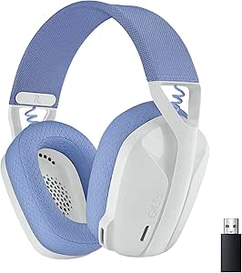
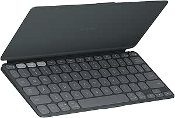

Produtos
-

Nome do produto
Pilha de duração ultralonga – Jogue com desempenho máximo sem se preocupar em ficar sem energia. O G305 oferece 250 incríveis horas de jogo contínuo a uma taxa de transmissão de 1 ms com uma única pilha AA. Mude o modo para economia de bateria e aumente ainda mais a duração da pilha para até 9 meses. Um indicador avisa você quando a pilha estiver acabando.
Ver detalhes -

Nome do produto
Versátil: O G435 é o primeiro headset gamer com conexão sem fio LIGHTSPEED e Bluetooth de baixa latência, oferecendo mais liberdade de jogo no PC, celular e dispositivos de jogos PlayStation.
Ver detalhes -

Nome do produto
Descrição do produto, cor, tamanho, textura, etc.
Ver detalhes -

Logitevh Astro A10
Com áudio ASTRO ajustado de forma personalizada, microfone boom que pode ser ativado para silenciar e uma faixa de cabeça ultradurável, o headset premium com fio para jogos A10 o tirará do sofá e o levará para a ação dos seus jogos favoritos.
Ver detalhes